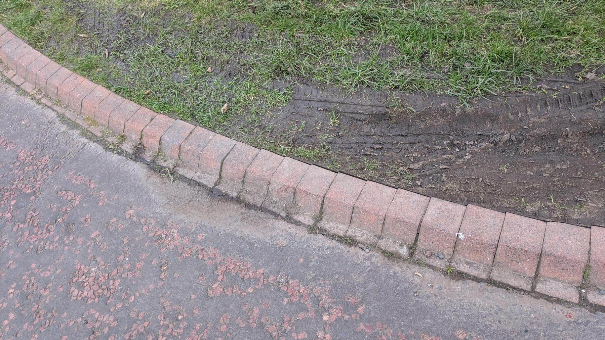
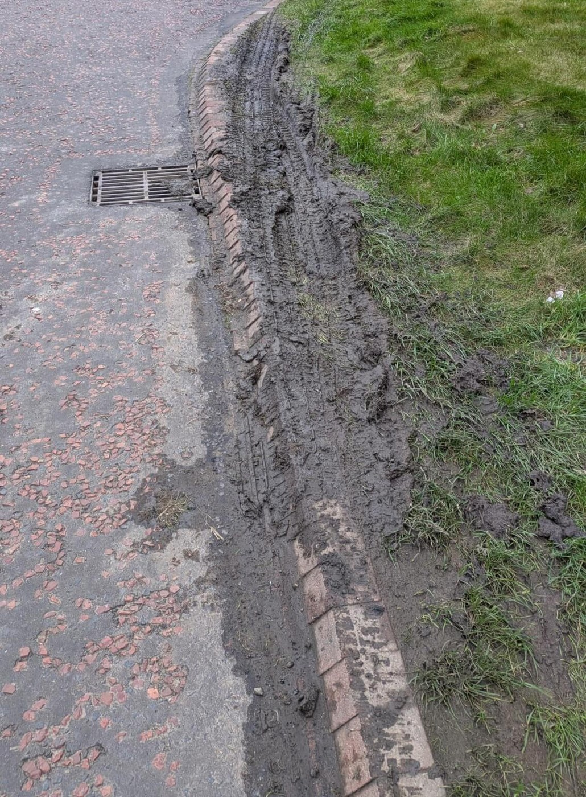
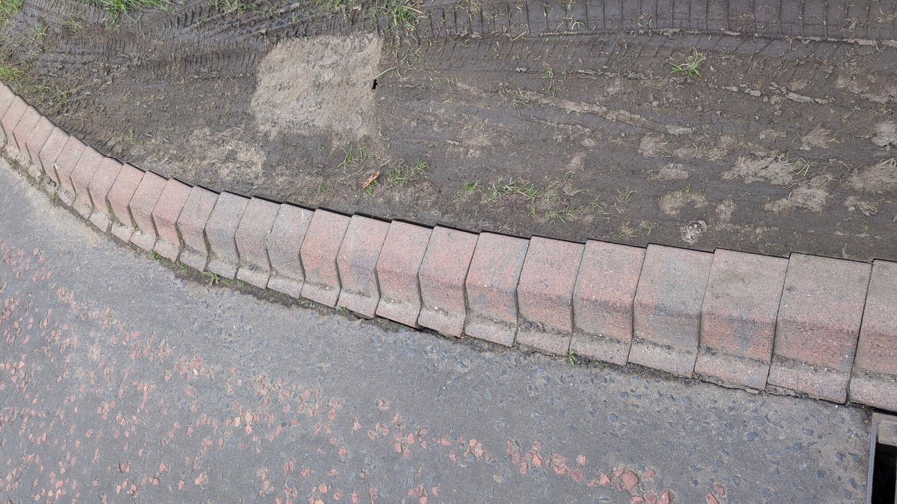
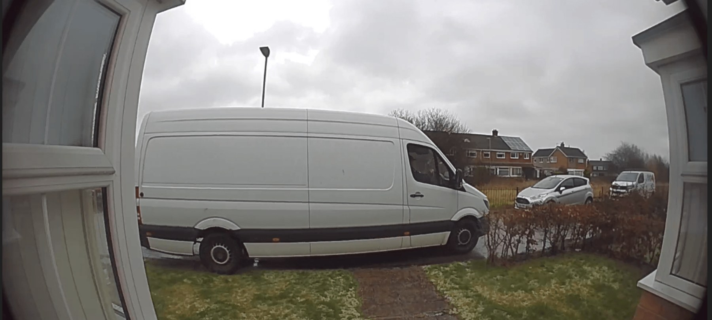
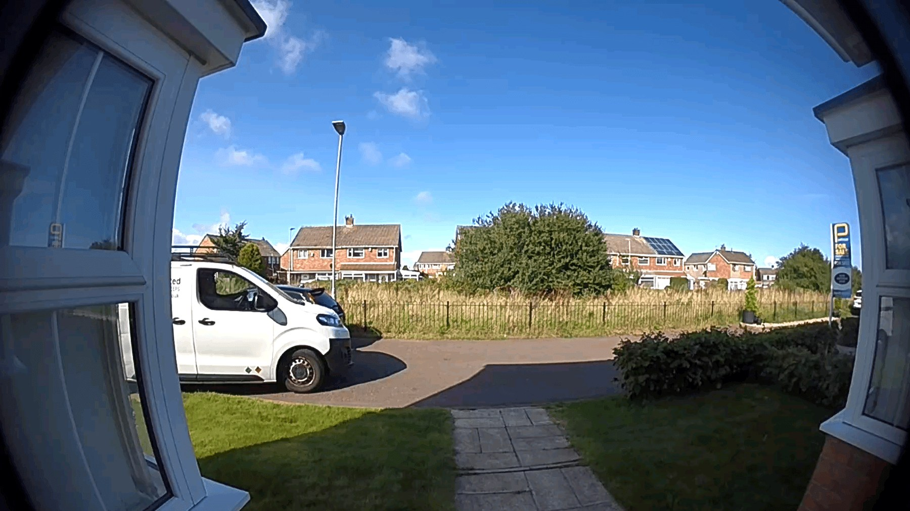

Earlier complaints existed
Taylor Wimpey complaint evidence dates from 2022. NCC records from 2023 document internal referrals and the resident’s statement that the issue had persisted since 2018.
Case 001 · Detailed public record
A documented history of physical damage, vehicle crossings, complaints, technical responses, information disclosures and an unresolved pause on preventative proposals.
Case summary
The affected area is shown on supplied plans as a grassed margin rather than a carriageway. Photographs show repeated rutting and mud, while doorbell footage shows delivery and other vehicles crossing the frontage immediately beside the route from the property entrance.
NCC has accepted that the photographs show verge overrun. Its final complaint response nevertheless concluded that the evidence did not establish a need for intervention and relied heavily on the absence of recorded injury collisions. It also acknowledged that fleet manoeuvring information had not been fully taken into account.
What the records establish
Taylor Wimpey complaint evidence dates from 2022. NCC records from 2023 document internal referrals and the resident’s statement that the issue had persisted since 2018.
The Stage 2 response expressly stated that the photographs show verge overrun, while disputing whether that automatically established pedestrian displacement.
NCC acknowledged that the team did not fully take into account the reported fleet manoeuvring incident, while relying on a regional injury-collision dataset.
NCC’s EIR response confirmed no recorded Road Safety Audit for this part of the development and no Section 38 agreement, while supplying drawings described as technically approved.
The response referred to an “area office” holding no records, while its attachments contained extensive Complaints and Planning material. A council-wide internal review is being prepared.
Taylor Wimpey says NCC requested that further consideration and works stop. The underlying NCC communication has not yet been disclosed or confirmed directly by NCC.
Outcome sought
The resident is not asking NCC to admit liability or approve a specific design in advance. The immediate request is that any blanket pause be withdrawn so Taylor Wimpey may prepare and submit proportionate preventative options.
NCC would remain free to assess each option against genuine technical, utility, access, maintenance, road-safety and adoption requirements, but should identify the information and criteria needed for that assessment.
Evidence summary
These representative images are published to explain the pattern. Originals and additional records are preserved privately. No police references, contact details or vehicle registrations are published here.





The images demonstrate recurring encroachment and physical consequences. They do not, by themselves, determine legal liability, the cause of every movement or which engineering option should be approved.
Full chronology
Entries are labelled as documented, attributed or reported so that readers can distinguish the evidential basis.
The resident reports that vehicle overrun, recurring mud and concern about the layout began after the household moved into the development. The history was later stated in correspondence held by NCC.
Source basis: Resident account, later recorded in NCC’s 2023 disclosure.A formal Taylor Wimpey complaint was recorded concerning vehicles parking on grass verges and causing tyre marks in the grass.
Source basis: Taylor Wimpey complaint chain disclosed by NCC under FOI 11032506.Taylor Wimpey stated that the strip was in its ownership, had to remain accessible and grassed, and was maintained through the development’s management arrangements. It said it could not enforce against individual drivers and closed the complaint.
Source basis: Taylor Wimpey complaint response disclosed by NCC.The resident again asked who was responsible for repairing the strip and linked the damage to the continuing absence of effective parking controls.
Source basis: Correspondence disclosed by NCC.The Complaints mailbox referred the matter to Planning Enforcement and Highways Programme. Planning Enforcement said it was not a planning matter. Parking Services confirmed there were no restrictions and said it could not assist. An approved highway layout plan was supplied.
Source basis: NCC Planning disclosure under FOI 11032506.A new enquiry sought action on parking, verge overrun, the service margin and the future adoption position.
Source basis: NCC enquiry 7519613, disclosed in the complaints bundle.NCC said the roads were not maintainable at public expense and no Section 38 agreement was in place. It said Highways Development Management and Legal were liaising with developers, Persimmon was understood to be lead developer, double yellow lines would not be pursued, and verge driving was attributed to road users. It also cited possible utilities as a reason not to expect fencing or planting within the service margin.
Source basis: NCC response to enquiry 7519613.The resident asked NCC to inspect the site, ensure the current use did not depart from the approved layout and withhold adoption until suitable protective measures were installed.
Source basis: NCC enquiry 8501081.Doorbell footage recorded a large truck passing across or immediately over the entrance-side area. The footage is relevant to the practical operation of the frontage, although the precise wheel path is partly obscured in some frames.
Source basis: Resident video evidence.The resident formally complained about the layout, vehicle overrun, pedestrian risk and the absence of preventative measures. A separate request sought Road Safety Audit and Section 38 records.
Source basis: NCC complaint 9316265 and EIR 9318765.NCC said it would review earlier responses alongside the current concerns and handle the Road Safety Audit records separately under the Environmental Information Regulations.
Source basis: NCC Stage 1 acknowledgement.The resident clarified that the primary complaint concerned layout and recurring encroachment rather than routine grass maintenance. Photographs, vehicle evidence, the reported fleet incident and technical arguments were submitted.
Source basis: Stage 1 supporting submission and attachments.NCC said the shared-surface layout complied with guidance and that no evidence showed a safety risk requiring intervention. It separated vehicle use of the verge from the safety of the layout and rejected fencing or planting on service-margin grounds.
Source basis: NCC Stage 1 response, complaint 9316265.NCC stated that no Road Safety Audit existed and no Section 38 agreement was in place. It supplied drawings described as technically approved; several were marked preliminary. A follow-up confirmed that no recorded RSAs were held for this part of the development.
Source basis: NCC EIR response 9318765 and follow-up confirmation.The resident challenged the evidential basis of Stage 1, reliance on recorded injury incidents, treatment of the reported 2022 council-vehicle incident, use of Manual for Streets and the generic utilities objection.
Source basis: Stage 2 escalation request.NCC did not uphold the complaint. It accepted that the photographs showed verge overrun and acknowledged that the team had not fully taken into account the fleet manoeuvring information. It nevertheless relied on injury-collision data and maintained that practical and technical concerns justified refusing a knee rail.
Source basis: NCC Stage 2 response, complaint 9316265.The damaged grassed area was repaired and reseeded.
Source basis: Resident records and Taylor Wimpey correspondence.Within approximately 50 hours of reinstatement, the resident documented more than five further vehicle crossings of the newly repaired strip.
Source basis: Time-stamped photographs and correspondence.The resident requested records from 2018 onwards covering complaints, internal and external communications, adoption, maintenance, inspections and proposed traffic-management measures.
Source basis: FOI request 11032506.VergeOverrunUK published the first public summary of the case, with supporting images and documents retained pending redaction.
Source basis: Campaign publication record.Taylor Wimpey informed the resident that NCC had requested all further consideration and works to be paused because the resident was said to be pursuing a claim or separate legal avenue.
Source basis: Taylor Wimpey correspondence; the underlying NCC instruction has not yet been disclosed.Taylor Wimpey issued a final response and closed the matter. It attributed to NCC a position that proposals could not be considered and that adoption of the strip and wider development would not progress while the unspecified matter remained unresolved.
Source basis: Taylor Wimpey final complaint response.NCC stated that its “area office” held no relevant records, yet supplied a 95-page complaints bundle and Planning records documenting complaints, internal referrals and Taylor Wimpey material. An internal review is being prepared to clarify the council-wide searches and the correct information-access regime.
Source basis: NCC FOI response 11032506 and four disclosure attachments.The resident asked NCC to identify the alleged claim or process, the decision-maker and date, the basis of the pause, the event that would end it, and whether Taylor Wimpey may resume preparing proposals while liability remains reserved.
Source basis: Resident correspondence to NCC.The Council’s complaint procedure is complete. The resident is preparing an LGSCO complaint focused on the quality of the investigation and a separate internal review and supplementary EIR request concerning the disclosure searches and reported pause.
Source basis: Current procedural position.FOI disclosure — 31 July 2026
NCC’s response said that its “area office” did not hold records because the strip was not an adopted highway maintainable at public expense. The same disclosure nevertheless included a 95-page Complaints bundle and three Planning records containing historic complaints, internal referrals and Taylor Wimpey material.
The resident intends to request an internal review asking NCC to identify the teams, systems, archives and mailboxes searched, reconsider whether the request should have been handled wholly or partly under the EIR, and conduct fresh council-wide searches.
Questions awaiting answers
Taylor Wimpey has described a pause, but NCC has not yet directly confirmed the precise instruction or whether it remains active.
The resident has not issued court proceedings and is not aware of a live claim awaiting determination. NCC has been asked to identify the process, reference, decision-maker and event that would end the pause.
The resident asks that proposals be allowed to proceed to technical assessment while all parties reserve their legal positions.
NCC has raised utilities, access, turning space, maintenance and visual concerns, but no site-specific submission checklist or route to a revised option has been identified.
The FOI material confirms earlier complaints and internal referrals, but the complaint decisions did not identify which historic records were retrieved or how they were weighed.
Taylor Wimpey attributes to NCC a refusal to adopt the strip or wider development while the matter remains unresolved. NCC has been asked to confirm or correct that account.
The resident reports that recurring vehicle movements, damage and the absence of a protected route have caused continuing anxiety and substantial time and trouble. The household is concerned about whether it can reasonably remain in the property if no practical solution is progressed.
Any effect on property value or marketability has not been professionally assessed.
The Council’s internal complaint process concluded on 22 June 2026. A complaint to the Local Government and Social Care Ombudsman is being prepared and will focus on investigation and decision-making process rather than asking the Ombudsman to select an engineering design.
Right to reply and corrections
Factual corrections, relevant records and formal responses will be considered fairly. Material responses may be summarised or published after appropriate redaction. Significant inaccuracies will be corrected promptly. Publication of a response does not indicate that the campaign accepts every statement within it.
Document references used in this summary: Taylor Wimpey complaint 0014358; NCC enquiry 7519613; NCC enquiry 8501081; NCC complaint 9316265; NCC EIR 9318765; NCC FOI 11032506. Full private records include additional correspondence and media.